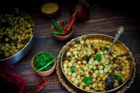

Rail Palaram
Ingredients:
- Rice flour - 1 cup
- Jaggery - 1/2 cup (grated)
- Water - 1 cup
- Cardamom powder - 1/2 teaspoon
- Ghee - 2 tablespoons
- Grated coconut - 2 tablespoons (optional)

Recipe:
- In a saucepan, heat water and jaggery over medium heat until the jaggery melts completely.
- Strain the jaggery syrup to remove impurities and return it to the saucepan.
- Add cardamom powder to the jaggery syrup and bring it to a boil.
- Gradually add rice flour to the boiling syrup while continuously stirring to avoid lumps.
- Cook the mixture on low heat until it thickens and forms a dough-like consistency.
- Remove the dough from heat and allow it to cool slightly.
- Grease your hands with ghee and shape the dough into small cylindrical or oval-shaped logs.
- If desired, roll the logs in grated coconut for added flavor.
- Rail Palaram is ready to serve. Enjoy the sweet delicacy as a snack or dessert!